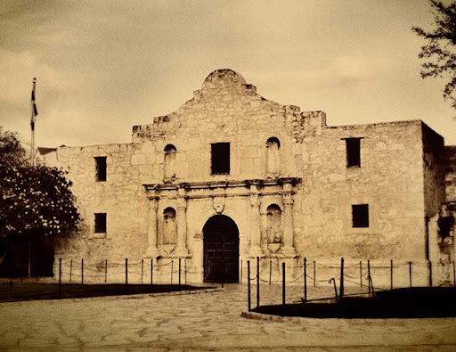
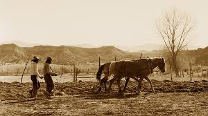

Naše historie
Příběh Los Pollos Hermanos začal před desítkami let jako prostý sen dvou přátel, Gustava Fringa a Maximina Arciniegy, kteří chtěli přinést autentické chutě své domoviny širšímu světu. První skromná pobočka otevřená v Mexiku roku 1985 stála na rodinných receptech a vizi vytvořit místo, kde se lidé budou cítit jako doma. Ačkoliv počátky provázely těžké časy, právě tato éra formovala neochvějnou oddanost kvalitě a čerstvosti, která se později stala symbolem značky a základním kamenem jejího budoucího úspěchu.
Po přesunu do Spojených států se řetězec rozrostl v prosperující síť čtrnácti restaurací rozsetých po celém jihozápadě, s centrem v Albuquerque v Novém Mexiku. Pod vedením charismatického a komunitně zaměřeného Gustava Fringa se Los Pollos Hermanos stalo víc než jen rychlým občerstvením; stalo se pilířem místní ekonomiky. Společnost se hrdě hlásila k podpoře místních charit, policie a komunitních programů, čímž si získala srdce tisíců věrných zákazníků, kteří nedali dopustit na pověstné smažené kuře připravované s láskou a precizností.
Dnes je Los Pollos Hermanos vnímáno jako zářný příklad úspěšného podnikatelského příběhu, který se zapsal do historie moderní gastronomie. Značka se stala symbolem profesionality, precizního marketingu a standardů, které v oboru rychlého občerstvení jen těžko hledají konkurenci. Její odkaz žije dál v paměti zákazníků i fanoušků jako připomínka doby, kdy se z malé rodinné vize stal mezinárodní fenomén, který svou pečlivostí, čistotou a oddaností ke kvalitě nastavil laťku pro celý průmysl.

